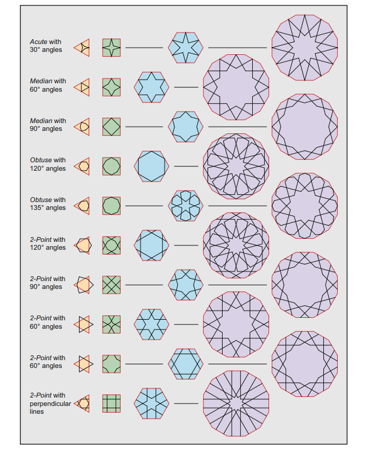

GMD / CONSTRUCTION STUDIES / DRAFTGeometry with
Geometry with
a named source.
Ten parameterized seeds in four families, with outline, filled, wide-stroke and selected aperture studies. The vector studies are contemporary interpretations. Each entry keeps its source citation, recipe and application distinct.
LOADING ASSET COUNTNOT HISTORICAL FACSIMILESISOLATED FORMS · NO SEAMLESS REPEAT CLAIM
SOURCE → CONSTRUCTION → USE
Keep the trail visible.
Bonner Fig.92 (PDF p.251 / printed p.229) informs angle and host-polygon vocabulary; Fig.123 (PDF p.277 / printed p.255) informs square–octagon variants. Fig.490D (PDF p.556 / printed p.534) is an eight-segment dome-gore reference, not a flat flower blueprint. The Egyptian booklet pp.12–16 informs register rhythm without object attribution.
Read asset manifest ↗
Atlas assets unavailable.
Open this page through a local web server so its manifest can load.